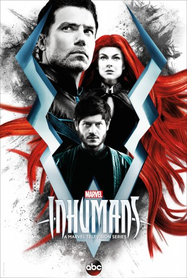

 
 IMDB-Wertung: 5.1 / 10
IMDB-Wertung: 5.1 / 10  Metascore: 0
Metascore: 0 
In der Serie wird die bisher noch nie erzählte Geschichte der Königsfamilie der Inhumans aus der Stadt Attilan offenbart. Medusa (Serinda Swan) ist die Königin der Super-Menschen und die Frau von Black Bolt (Anson Mount). Maximus (Iwan Rheon) ist der Bruder des Königs, der selbst den Wunsch nach der Krone hegt. Die königliche Familie musste aufgrund eines Militärputsches fliehen und kommt so auf das irdische Hawaii.
Jahr: 2017
Dauer: 42 Minuten
FSK:
Land: USA Studio: Disney-ABC Domestic TelevisionTonspuren: DD5.1 - , - , - ,
Untertitel: Englisch,
Auflösung: 720p (1280x720) Größe: 1607 MB
Genre: Action, Sci-Fi, Abenteuer, TV-Serie
Regisseur: Chris Fisher, Roel Reiné, Billy Gierhart, Neasa Hardiman, David Straiton
Drehbuch: Scott Buck, Jack Kirby, Stan Lee, Rick Cleveland, Scott Reynolds
Soundtrack:
Darsteller:
 Anson Mount als Black Bolt, 8 episodes, 2017
Anson Mount als Black Bolt, 8 episodes, 2017 Serinda Swan als Medusa, 8 episodes, 2017
Serinda Swan als Medusa, 8 episodes, 2017 Ken Leung als Karnak, 8 episodes, 2017
Ken Leung als Karnak, 8 episodes, 2017- Eme Ikwuakor als Gorgon, 8 episodes, 2017
- Isabelle Cornish als Crystal, 8 episodes, 2017
- Ellen Woglom als Louise, 8 episodes, 2017
 Iwan Rheon als Maximus, 8 episodes, 2017
Iwan Rheon als Maximus, 8 episodes, 2017- Sonya Balmores als Auran, 8 episodes, 2017
 Henry Ian Cusick als Dr. Evan Declan, 6 episodes, 2017
Henry Ian Cusick als Dr. Evan Declan, 6 episodes, 2017- Ari Dalbert als Bronaja, 6 episodes, 2017
- Krista Alvarez als Flora, 6 episodes, 2017
 Aaron Hendry als Loyolis, 5 episodes, 2017
Aaron Hendry als Loyolis, 5 episodes, 2017- Michael Buie als King Agon, 5 episodes, 2017
 Marco Rodríguez als Kitang, 4 episodes, 2017
Marco Rodríguez als Kitang, 4 episodes, 2017- Faleolo Alailima als Sammy, 4 episodes, 2017
 Bridger Zadina als Mordis, 4 episodes, 2017
Bridger Zadina als Mordis, 4 episodes, 2017 Tanya Clarke als Queen Rynda, 4 episodes, 2017
Tanya Clarke als Queen Rynda, 4 episodes, 2017 Ptolemy Slocum als Tibor, 4 episodes, 2017
Ptolemy Slocum als Tibor, 4 episodes, 2017- Lofton Shaw als Young Black Bolt, 4 episodes, 2017
- Chad James Buchanan als Dave, 4 episodes, 2017
- Mike Moh als Triton, 3 episodes, 2017
- Ty Quiamboa als Holo, 3 episodes, 2017
 Tom Wright als George Ashland, 3 episodes, 2017
Tom Wright als George Ashland, 3 episodes, 2017- Jamie Gray Hyder als Jen, 3 episodes, 2017
- Michael Trotter als Reno, 3 episodes, 2017
- Liv Hewson als Audrey, 3 episodes, 2017
- Moses Goods als Eldrac, 3 episodes, 2017
- Sumire als Locus, 3 episodes, 2017
- V.I.P. als Young Medusa, 3 episodes, 2017
- Miriam Lucien als Serene Inhuman, 3 episodes, 2017
- Kala Alexander als Makani, 3 episodes, 2017
- Albert Ueligitone als Pablo, 3 episodes, 2017
- Matt Perfetuo als Sakas, 3 episodes, 2017
- Joseph Kingsley als Assistant, 3 episodes, 2017
- Andra Nechita als Iridia, 3 episodes, 2017
 Nicola Peltz als New Inhuman, 2 episodes, 2017
Nicola Peltz als New Inhuman, 2 episodes, 2017- Stephanie Anne Lewis als Paripan, 2 episodes, 2017
- Jason Lee Hoy als Royal Guard Sergeant, 2 episodes, 2017
- Aidan Fiske als Young Maximus, 2 episodes, 2017
- Jason Quinn als Pulsus, 2 episodes, 2017
- Jeff Juett als Ted, 2 episodes, 2017
- Deborah Glazier als Genetic Member #1, 2 episodes, 2017
 Garret Sato als Lead Mercenary, 1 episode, 2017
Garret Sato als Lead Mercenary, 1 episode, 2017- Allan Cole als Outspoken Inhuman, 1 episode, 2017
- Wolf Lee Counsel als Royal Guard, 1 episode, 2017
- John-Patrick Driscoll als Rivera, 1 episode, 2017
- Steve Trzaska als Doudan, 1 episode, 2017
- Carlos Arellano als Captain Pena, 1 episode, 2017
- Sam Bass als Royal Guard (uncredited), 7 episodes, 2017
- Wesley Jansen als Lower Class Human (uncredited), 3 episodes, 2017
Datei: X:\NEU\Marvel's Inhumans\Marvels Inhumans S01E01.mkv seit 28.11.2018
 Es gibt insgesamt 187 Filme in der Gruppe 'NEU'
Es gibt insgesamt 187 Filme in der Gruppe 'NEU'
")